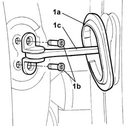
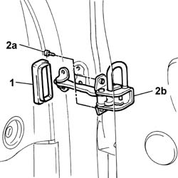

7005A28 Front side DOOR LIMITER - R.R.
- Path
- Procedures > 70 FITTINGS > 7005 passenger compartment front side doors > 7005A FRONT DOOR ASSEMBLY > 7005A28 Front side DOOR LIMITER - R.R.
- Kind
- repair procedure (removal / refitting; the operation number is the code)
- Applies to
- all engines; all production periods
- Interactive page
- https://sloeber94.github.io/elrnDB-lThss/en/#/79818
Applies to: all engines; all production periods
 Removing
Removing
 Refitting
Refitting- Disconnect the negative battery terminal.
See in Op. 7005E18 Front side door armrest - R.R.
See in Op. 7005E08 Front side door INTERIOR PANEL - R.R.
See in Op. 7005A04 Front side door WATER GUARD PROTECTION -R R. or Postion with door panel removed
1. Remove the plastic protection (1a), undo the fixing bolts (1b), door pillar side, and release the plastic protection from the door check strap (1c).

Applies to: all engines; all production periods
1. Release the rubber protection and remove it.
2. Undo the fixing bolts (2a) and remove the door check strap (1b).

Applies to: all engines; all production periods
Refitting
Removing- Position the check strap and tighten the fixing bolts, door side.
- Fit the rubber protection and cover the door side fixing bolts.
- Tighten the check strap fixing bolts, door pillar side.
- Cover the door pillar side fixing bolts using the rubber protection.